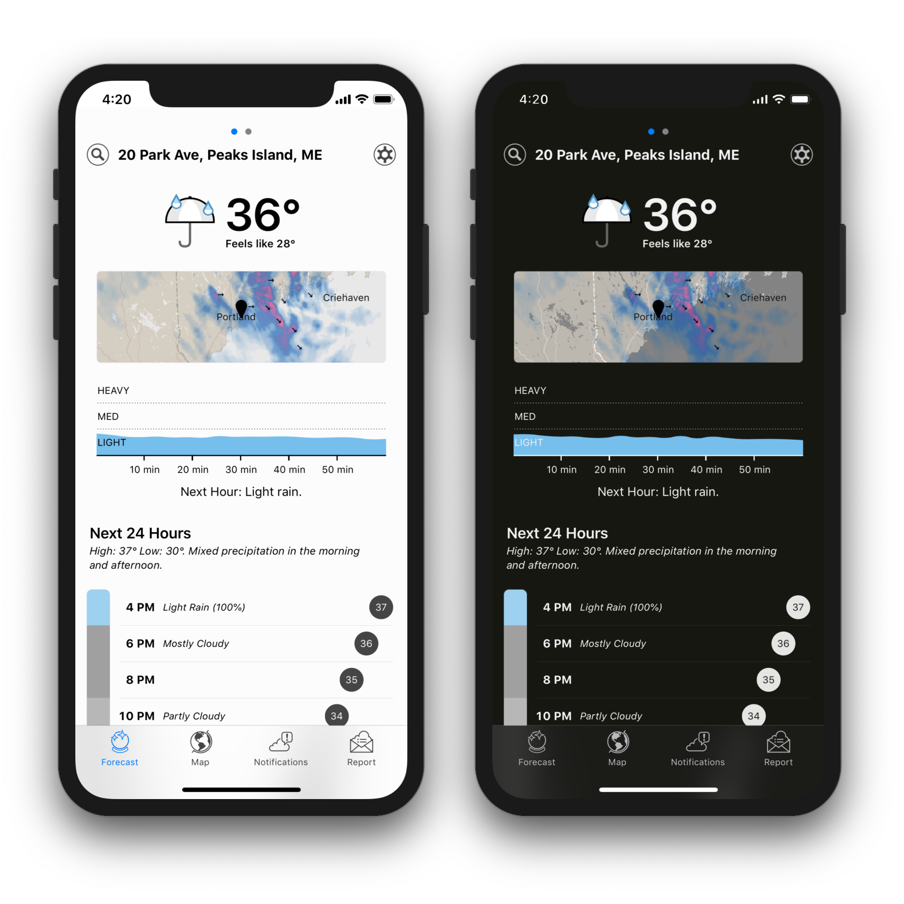
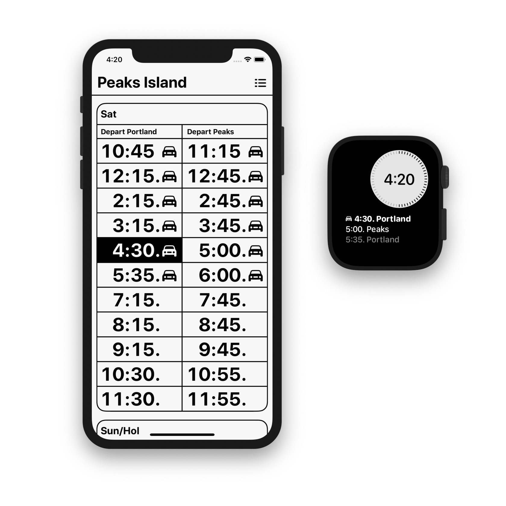
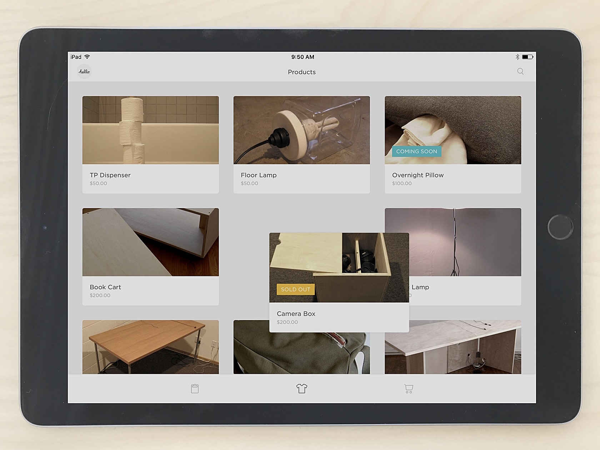
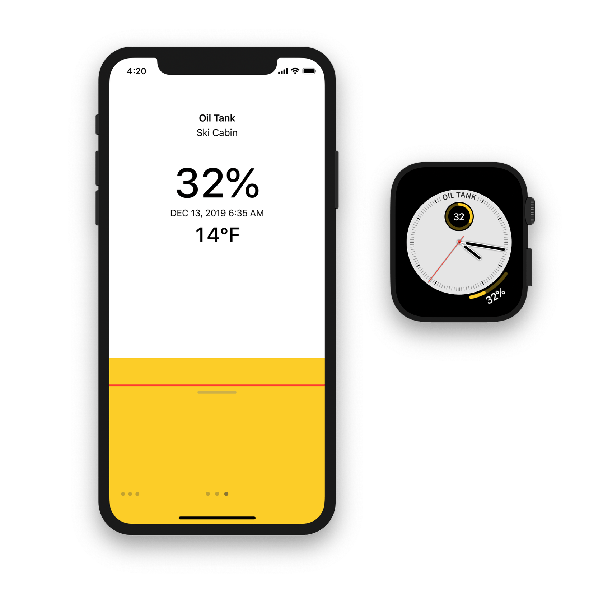
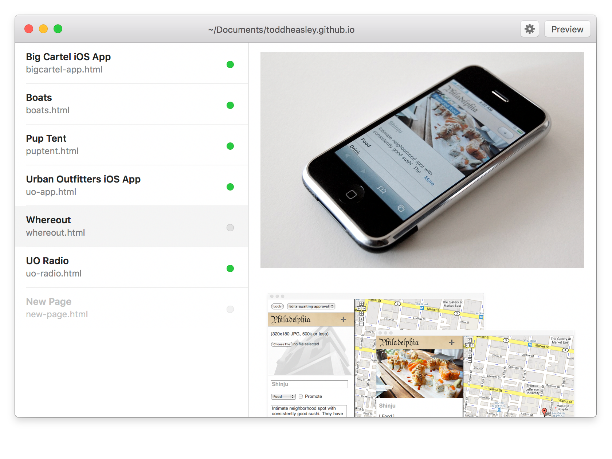
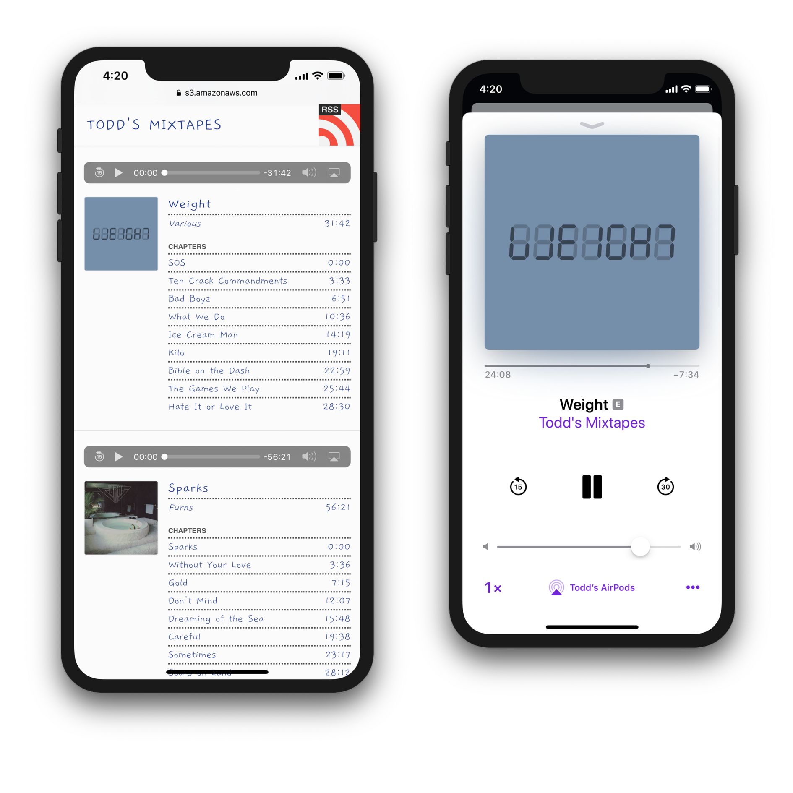
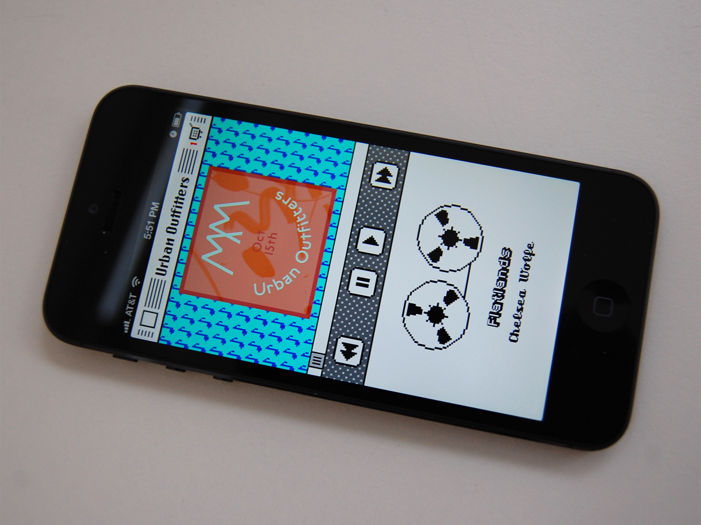
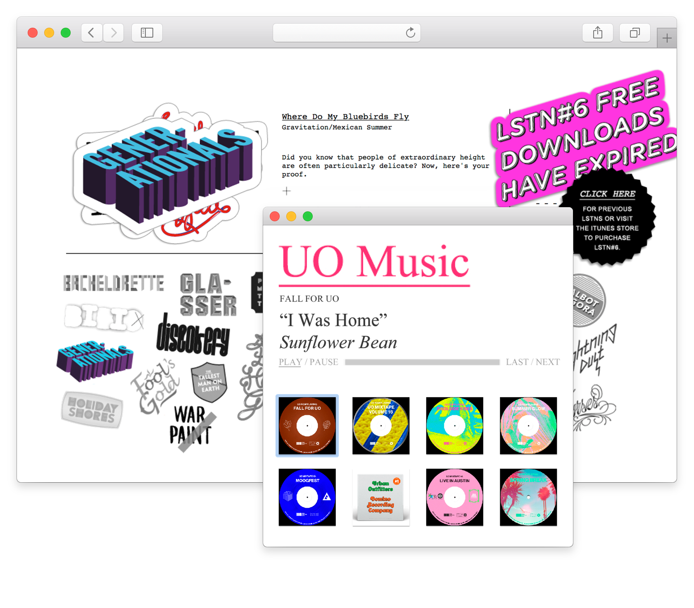

<!DOCTYPE html>
<title>Todd Heasley</title>
<meta name="viewport" content="initial-scale=1.0">
<link rel="apple-touch-icon" href="toddheasley.png">
<link rel="stylesheet" href="toddheasley.css">
<header>
    <h1>Todd&nbsp;Heasley</h1>
</header>
<main>
    <h1>Home</h1>
    <h2>Assorted&nbsp;Work and Personal&nbsp;Projects</h2>
    <figure><a href="darksky-app.html"> <figcaption><b>Dark Sky Weather</b><br>All-new design for the classic weather app, built on a radically modern Swift codebase</figcaption></a></figure>
    <figure><a href="boats.html"> <figcaption><b>Boats</b><br>Casco Bay Lines ferry schedules for iPhone, iPad and Apple Watch</figcaption></a></figure>
    <figure><a href="bigcartel-app.html"> <figcaption><b>Big Cartel App</b><br>Cocoa Touch interface for managing Big Cartel stores and selling in person</figcaption></a></figure>
    <figure><a href="tanktop.html"> <figcaption><b>Tanktop</b><br>Tank Utility Propane Monitor for iPhone, iPad and Apple Watch</figcaption></a></figure>
    <figure><a href="puptent.html"> <figcaption><b>Pup Tent</b><br>Lightweight static site editor for the Mac</figcaption></a></figure>
    <figure><a href="mixtapes.html"> <figcaption><b>Mixtapes</b><br>Love letters to my favorite music in podcast format</figcaption></a></figure>
    <figure><a href="uo-app.html"> <figcaption><b>Urban Outfitters App</b><br>Native Cocoa Touch with classic Mac style for selvedge denim pockets</figcaption></a></figure>
    <figure><a href="uo-radio.html"> <figcaption><b>UO Radio</b><br>iTunes-backed music platform for Urban Outfitters</figcaption></a></figure>
</main>
<footer>
    <p><a href="https://github.com/toddheasley">@toddheasley</a></p>
</footer>